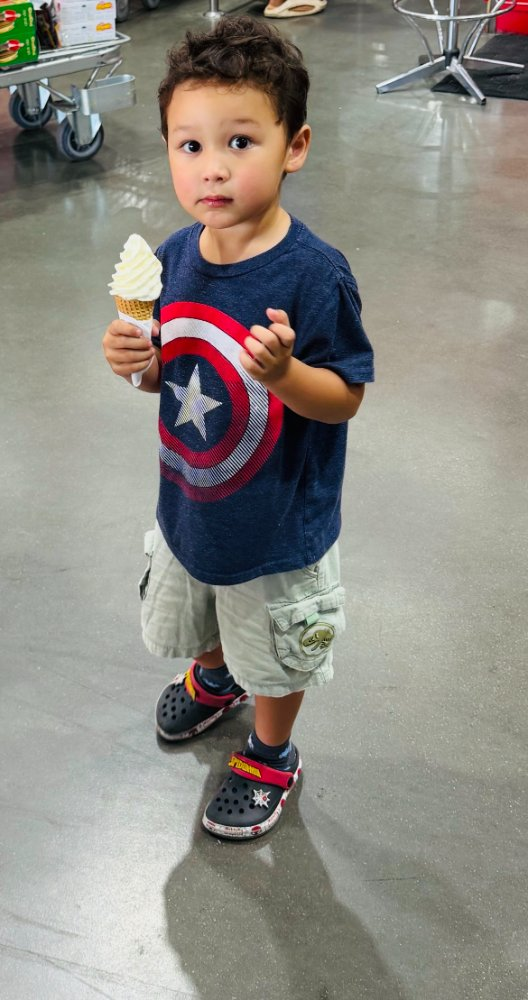
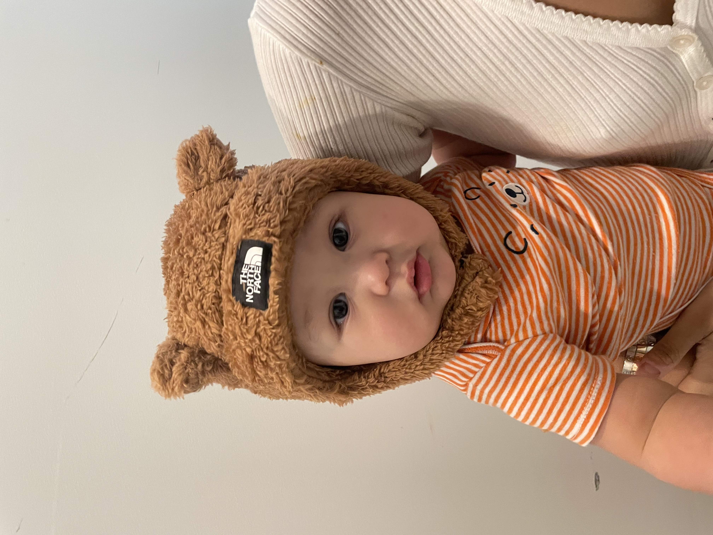

there are no guarantees in life, except death, taxes, and the unconditional love i have for my only child. he represents the best of me and his father, and no matter how complicated my life gets, i just look at him and everything else falters into the shadow. it’s that childlike exuberance that brings me back to those rudimentary elements in life. becoming a mother has profoundly brought me the peace i’ve spent my young adulthood yearning. it has brought me so much love and purpose. i honestly don’t know where i’d be right now if i didn’t have him.

i wish they would stay this size forever and never grow up